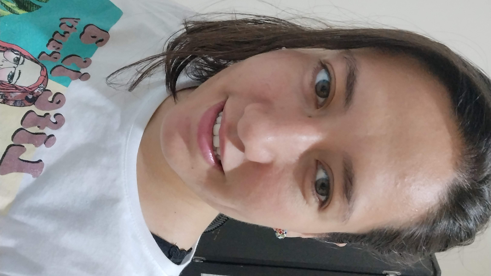

View more cat photos
Siguiente enlace muerto

My name is Liana Rodriguez,
estudio Ingenieria en Sistemas computacionales en la Universidad
Virtual del Estado de Guanajuato (UVEG ),
en estos momentos estoy cursando una materia que se llama Programación Orientada a Objetos.
Me gusta bailar y escuchar musica.
La programación es un reto para mí, me ha costado mucho aprender y al ser autodidacta
me ha costado organizar mis tiempos y enfocarme.
Cada día lucho para mejorar y aprender más sobre este mundo de la tecnología
Mis proyectos
- Proyecto Uno
- Proyecto Dos
Mi lista de aprendizaje
- HTML
- CSS
- JavaScript